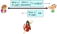
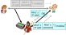
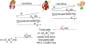
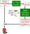
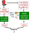
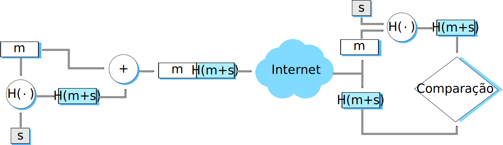

Confidencialidade: apenas origem e destino entendem mensagens.
Autenticidade: origem e destino são quem dizem ser.
Integridade: mensagens não são alteradas (c.c., podemos detectar).
Acesso e disponibilidade: serviços precisam estar disponíveis.
Jargão típico:
Alice, Bob, Trudy.
Chaves.
Texto plano, texto cifrado.
Ataques típicos:
Eavesdrop, inserção de mensagens, spoofing, sequestro de conexão, negação de serviço.
Criptografia: tipos.
Chave simétrica: ambos os lados compartilham uma única chave.
Exemplos: DES, AES.
Chave pública: há duas chaves, uma com cada parte.
O que a chave pública cifra, a chave privada decifra.
E vice-versa.
Exemplo: RSA.
RSA: funcionamento.
Chaves: (n, e) e (n, d).
Mensagem: número menor que n.
Cifragem: c = me mod n.
Deciframento: m = ce mod n.
Seguro: difícil fatorar n.
Autenticação
Autenticação (I)
Objetivo: Bob quer que Alice prove sua identidade para ele.
Protocolo ap1.0: Alice diz “eu sou Alice”.
Cenário de falha?
Autenticação (II)
Objetivo: Bob quer que Alice prove sua identidade para ele.
Protocolo ap1.0: Alice diz “eu sou Alice”.
Em uma rede, Bob não pode “ver” Alice. Logo, Trudy simplesmente declara ser Alice.
Autenticação: Nova Tentativa (I)
Protocolo ap2.0: Alice diz “eu sou Alice” em um pacote IP contendo o seu endereço como endereço IP de origem.
Cenário de falha?
Autenticação: Nova Tentativa (II)
Protocolo ap2.0: Alice diz “eu sou Alice” em um pacote IP contendo o endereço seu endereço IP de origem.
Trudy pode criar um pacote forjando o endereço de Alice (“spoofing”).
Autenticação: Nova Tentativa (III)
Protocolo ap3.0: Alice diz “eu sou Alice” e envia sua senha secreta como “prova”.

Cenário de falha?
Autenticação: Nova Tentativa (IV)
Protocolo ap3.0: Alice diz “eu sou Alice” e envia sua senha secreta como “prova”.

Ataque de repetição: Trudy grava pacote gerado por Alice e, mais tarde, o reproduz para Bob.
Autenticação: Mais uma Tentativa (I)
Protocolo ap3.1: Alice diz “eu sou Alice” e envia sua senha secreta criptografada como “prova”.
Cenário de falha?
Autenticação: Mais uma Tentativa (II)
Protocolo ap3.1: Alice diz “eu sou Alice” e envia sua senha secreta criptografada como “prova”.
Ataque de repetição ainda funciona!
Autenticação: Uma Nova Abordagem
Objetivo: evitar ataque de repetição.
Nonce (“desafio”): número (R) usado “uma única vez”.
Protocolo ap4.0: para provar que Alice está “ao-vivo”, Bob envia um nonce R. Alice deve retornar R cifrado com sua chave secreta.
Falhas? Desvantagens?
Autenticação: ap5.0
ap4.0 requer uso de uma chave simétrica compartilhada.
É possível fazer a autenticação usando técnicas de chave pública?
Protocolo ap5.0: usar nonce, criptografia de chave pública.
ap5.0: Falha de Segurança (I)
Ataque do tipo man-in-the-middle (“homem-no-meio”): Trudy se passa por Alice (para Bob) e por Bob (para Alice).

ap5.0: Falha de Segurança (II)
Ataque do tipo man-in-the-middle (“homem-no-meio”): Trudy se passa por Alice (para Bob) e por Bob (para Alice).
Dificuldade de detecção:
Bob recebe tudo que Alice envia e vice-versa (e.g., Bob e Alice podem se encontrar uma semana depois e relembrar da conversa).
O problema é que Trudy também recebe todas as mensagens!
Integridade de Mensagens
Importância
Atacante pode não ser capaz de forjar uma identidade, mas pode conseguir alterar o conteúdo de mensagens.
Adicionar, remover, alterar bytes.
Vários possíveis objetivos:
Inserir informações erradas/indesejadas.
Remover informações desejadas.
Garantir a integridade é fundamental em diversas aplicações:
Internet Banking.
Compras on-line.
Protocolos de roteamento.
...
Mas e se a comunicação utiliza criptografia? Problema da integridade é resolvido?
Pergunta relacionada: é necessário usar criptografia para garantir integridade?
Assinaturas Digitais (I)
Técnica criptográfica análoga às assinaturas escritas:
Origem (Bob) assina digitalmente um documento, estabelecendo que ele é, de fato, o dono/criador do documento.
Verificável, não-forjável: destinatário (Alice) pode provar a alguém que Bob, e ninguém mais (incluindo Alice), foi quem assinou o documento.
Assinaturas Digitais (II)
Esquema simples de assinatura digital para mensagem m:
Bob assina m cifrando-a com sua chave privada \(K^{-}_B\), criando a mensagem “assinada” \(K^{-}_B(m)\).
Assinaturas Digitais (III)
Suponha que Alice receba a msg m com a assinatura: m, \(K^{-}_B(m)\).
Alice verifica a mensagem m assinada por Bob aplicando a chave pública de Bob, \(K^{+}_B\), a \(K^{-}_B(m)\) e verificando se \(K^{+}_B\left(K^{-}_B(m)\right) = m\).
Se \(K^{+}_B\left(K^{-}_B(m)\right) = m\), quem quer que tenha assinado m deve ter usado a chave privada de Bob.
Logo, Alice é capaz de verificar que:
Bob assinou m.
Ninguém mais pode ter assinado m.
Bob assinou m e não m′
Não-repúdio:
Alice pode levar m e \(K^{-}_B(m)\) para um tribunal e provar que Bob assinou m.
Resumos Criptográficos
É computacionalmente caro cifrar mensagens longas com criptografia de chave pública.
Objetivo: criar “impressão digital” de tamanho fixo e fácil de computar.
Solução: aplicar uma função de espalhamento (hash) H à mensagem m, obter um resumo de tamanho fixo H(m).
Propriedades da função hash:
n-para-1 (i.e., função não é injetiva).
Produz resumo da mensagem de tamanho fixo (fingerprint).
Dado o resumo x da mensagem, é computacionalmente inviável encontrar m tal que x = H(m).
Checksum da Internet: um Hash Criptográfico Ruim
O checksum usado na Internet tem algumas destas propriedades:
Produz resumo de tamanho fixo da mensagem: 16-bits.
n-para-1.
Mas dada uma mensagem com um dado valor de hash, é fácil achar outra mensagem com o mesmo valor:
Algoritmos Usados como Funções Hash
MD5: função hash amplamente utilizada (RFC 1321).
Computa resumo de 128 bits em processo de 4 passos.
Para um dado resumo x, é aparentemente difícil construir uma mensagem m cujo hash MD5 seja x.
Msg
Hash
SHA-1 também é usado.
Padrão norte-americano [NIST, FIPS PUB 180-1].
Resumo de 160 bits.
Msg
Hash
Assinatura Digital = Resumo Criptográfico Assinado da Mensagem
Bob envia mensagem assinada digitalmente:

Alice verifica assinatura e integridade da mensagem assinada digitalmente.

Códigos de Autenticação de Mensagem
MAC: Message Authentication Code.
Ideia:
Alice e Bob possuem uma chave secreta compartilhada s.
Também chamado segredo compartilhado ou chave de autenticação.
Alice concatena a mensagem m com a chave s.
Alice calcula o hash H(m + s).
Alice envia a mensagem estendida (m, H(m + s)) para Bob.
Para verificar integridade, Bob extrai a mensagem m e calcula H(m + s).
Se o resultado for igual ao valor recebido, mensagem é integra.

MAC: Funciona?
Suponha que Trudy seja capaz de interceptar mensagens de Alice para Bob.
E alterar o conteúdo, enviar o resultado para Bob.
Como Trudy poderia enganar a verificação do MAC?
Digamos que Trudy altere m, obtendo m′.
Se H( ) é um bomhash criptográfico, muito provavelmente H(m′ + s) ≠ H(m + s).
Trudy pode alterar o MAC enviado com a mensagem, mas para qual valor?
Ela não sabe o segredo s, parte do argumento para a função hash.
Novamente, se H( ) é um bomhash criptográfico, saber H(m + s), H( ) e m não ajuda a calcular H(m′ + s)
MAC vs. Assinatura Digital
Duas abordagens são equivalentes?
Não!
Assinaturas digitais são mais pesadas.
Além do hash, temos que executar algoritmo de criptografia.
MACs são mais leves.
Usamos uma chave/segredo, mas apenas para concatenar à mensagem antes do hash.
Por outro lado:
MAC exige o estabelecimento prévio de um segredo compartilhado.
Mas se Alice conhece a chave pública de Bob, assinatura digital provê evidência irrefutável de que Bob criou a mensagem.
Resumo da Aula (I)...
Autenticação: Objetivo.
Provar que as partes são quem afirmam ser.
Autenticação: dificuldades.
Atacante pode forjar identidade.
Atacante pode forjar endereço IP.
Atacante pode repetir pacotes legítimos enviados.
Mesmo criptografados.
Autenticação: nonce.
Número aleatório que “não se repete”.
Enviado como um desafio.
“Prove sua identidade cifrando o nonce”.
Criptografia simétrica ou de chave pública.
Ainda vulnerável a ataque do tipo man-in-the-middle.
Resumo da Aula (II)...
Integridade: objetivo.
Ser capaz de verificar se mensagem foi alterada pelo atacante.
Bytes foram removidos, adicionados ou alterados.
Integridade: abordagens.
Enviar mensagem e versão criptografada com chave privada.
Funciona, mas tem alto custo computacional.
Alternativa: assinatura digital.
Enviar mensagem e resumo criptográfico cifrado com a chave privada.
Resumo é pequeno, irreversível e muda bastante com alterações na mensagem.
Requer criptografia.
Alternativa: MAC.
Message Authentication Code.
Usa segredo compartilhado.
Mas apenas concatena mensagem e segredo.
O MAC é o hash desta concatenação.
MAC é mais leve, mas assinatura digital provê automaticamente identidade do transmissor.
Leitura e Exercícios Sugeridos
Autenticação:
Páginas 512 a 516 do Kurose (Subseção 8.3.4).
Exercícios de fixação 16, 17 e 18 do capítulo 8 do Kurose.
Problemas 15 e 16 do capítulo 8 do Kurose.
Integridade:
Páginas 504 a 510 do Kurose (Seção 8.3 até subseção 8.3.3, exceto certificação de chave pública).
Exercícios de fixação 9, 10, 11, 12, e 13 do capítulo 8 do Kurose.
Problemas 11, 12, 13, e 14 do capítulo 8 do Kurose.
Próxima Aula...
Até aqui, estudamos vários mecanismos que dependem do conhecimento de chaves.
Estabelecimento de uma chave secreta compartilhada.
Ou o conhecimento da chave pública de outra parte.
Mas como estas chaves são obtidas de forma segura?
Tema da próxima aula.
Além disso, falaremos sobre uma aplicação baseada em segurança: o e-mail seguro.